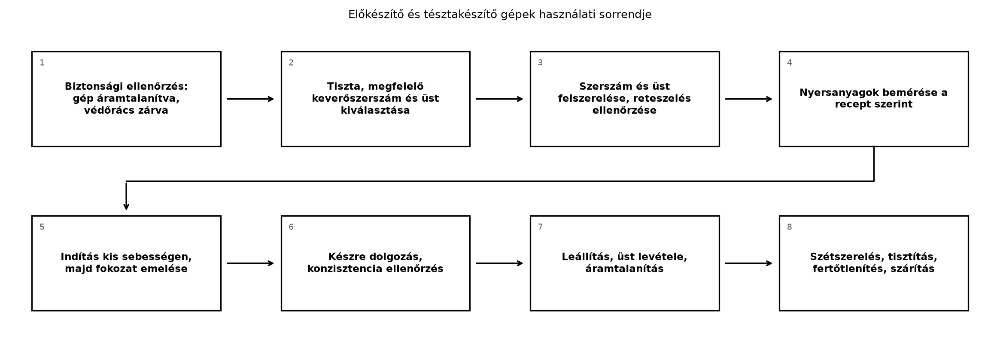
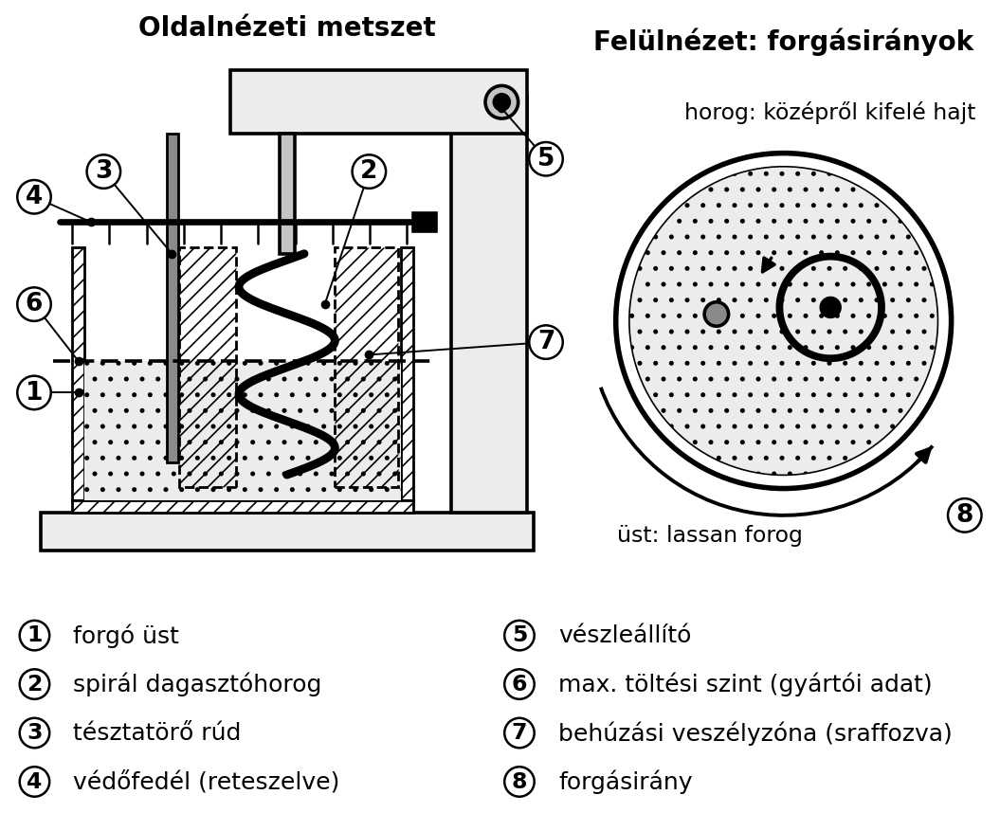

Hajnali négy óra van, a cukrászüzem reggeli műszakja éppen indul. Az asztalon tíz kiló liszt, hűtőben tojás, vaj, tejszín. A nap első tétele egy lágy vajas tészta, utána egy nehéz, gyúrt élesztős tészta következik. Ha a dagasztógépet rosszul töltjük, túltöltjük vagy rossz keverőszerszámot teszünk fel, a tészta ragacsos, egyenetlenül kidolgozott lesz, vagy a gép leáll. Ha pedig valaki menet közben benyúl az üstbe, súlyos baleset történhet. Az előkészítő és tésztakészítő gépek ezért nemcsak gyorsítják a munkát, hanem szigorú használati rendet is követelnek. Ebben az alfejezetben a szitáló-, aprító- és darálógépeket, a dagasztógépeket és az univerzális konyhagépeket tanuljuk meg: mire valók, hogyan kell összeállítani, tölteni, üzemeltetni és tisztítani őket.
Képzelj el egy univerzális konyhagépet: alul a masszív állvány, rajta a hajtókar, oldalt az emelőkar, felül a biztonsági védőrács. Az üstbe először beletesszük a keverőszerszámot, utána az anyagokat, végül az üstöt a helyére emeljük. A gép indulásakor a szerszám lassan forog, a tészta először összeáll, majd a dagasztás során a sikér hálózata kialakul. A folyamatot jól mutatja a következő műveleti sorrend:

Az ábra nélkül is fontos, hogy a lépések sorrendje mindig ugyanaz: először a biztonság, azután a szerelés, a töltés, a gépi munka, végül a tisztítás.
Definíció. Előkészítő és tésztakészítő gépek a cukrászüzemben azok a gépek, amelyek a nyersanyagok mechanikai előkészítését (szitálás, aprítás, darálás, keverés) és a tészták, krémek bedolgozását végzik. A biztonságos működés feltétele, hogy a géphez tartozó védőberendezés (rács, fedél, retesz) működőképes legyen, és a gép csak a gyártó utasítása szerint legyen szerelhető, tölthető.
Jogszabály. A munkavédelemről szóló 1993. évi XCIII. törvény előírja, hogy a munkahelyen csak kifogástalan állapotú, rendeltetésszerűen használt munkaeszköz szolgálhat. A gépek biztonsági követelményeit az uniós gépek biztonságára vonatkozó rendelet (jelenleg a Gépekről szóló 2006/42/EK irányelv és magyar átültetése; 2027. január 20-tól az (EU) 2023/1230 géprendelet, amely az irányelvet felváltja; ellenőrizendő: hatályos alkalmazási dátum és átmeneti szabályok) és a vonatkozó magyar szabványok tartalmazzák. Az élelmiszerrel érintkező gépfelületek anyagára az élelmiszer-higiéniai rendelet (852/2004/EK) és az élelmiszerrel érintkező anyagokról szóló 1935/2004/EK rendelet előírásai vonatkoznak (ellenőrizendő: aktuális alkalmazási részletek). A vendéglátó üzemben a gépek tisztítási és karbantartási rendjét a HACCP-alapú eljárás részeként kell szabályozni.
Szabály. Géphez csak oktatott, a kezelési utasítást ismerő dolgozó nyúlhat, és a gépet csak a munkakörébe tartozó feladatra használhatja. Amennyiben a gép védőberendezése hiányzik, sérült, vagy a reteszelés nem zár, a gépet áramtalanítani kell, és el kell különíteni a javításig. Működés közben benyúlni, a védőrácsot kiiktatni, a tartozékot kézzel leszedni tilos.
A cukrászüzembe érkező liszt, porcukor, kakaópor csomós, tömörödött lehet, és idegen anyagot (zsinegdarab, fémszemcse, csomó) tartalmazhat. A szitálógép a por alakú anyagot forgó kefék vagy rezgő szitaszövet segítségével áthajtja egy finom lyukú szitán. Így a por fellazul, a csomók szétesnek, a nagyobb idegen anyag fennakad. A szitálás levegőt is juttat a porba, ami a keverésnél egyenletesebb bevonást és krémesebb szerkezetet tesz lehetővé. A szita szövetsűrűségét az anyaghoz kell választani: a finom porcukorhoz sűrűbb, a darás liszthez ritkább szita való.
A diót, mákot, mandulát, csokoládét, grillázst gyakran a felhasználás előtt frissen aprítjuk vagy daráljuk. A darálógép (pl. hengeres, kúpos vagy tárcsás daráló) a magvak szemcséit összetöri, és a beállított résmérettől függően finom vagy durva szemcseméretet ad. A dió és a mák olajtartalma magas, ezért a darálás közben hő szabadulhat fel; ha túl gyorsan adagoljuk, a massza megolvad, „ragacsos” lesz. Ezért a darálót kis adagokban, rövid ideig járatjuk, és szükség esetén porcukorral keverve daráljuk az olajos magvat. A kutter (gyorsfordulatú tálvágó) függőleges vagy ferde tálban forgó, éles késeket használ. Aprít, pürésít, sőt rövid idejű keveréssel masszákat is homogenizálhat. Gyümölcspépek, olajos magvak, marcipán alapanyagok aprításához jól használható, de krémes, hőre érzékeny anyagot csak rövid impulzussal szabad futtatni.
Figyelem. Az aprító- és darálógépek éles kései, hengerei súlyos vágást okozhatnak. Tisztítás előtt a gépet mindig áramtalanítjuk, és a késeket a gyártó utasítása szerint, vágásálló kesztyűben szereljük ki. A garatot csak adagoló eszközzel töltjük, ujjal benyúlni tilos.
A metszeten a garat (1), a hengerpár (2), a sraffozott behúzási pont (3) a két henger között, a tömőfa (4), a kimenet (5) és a főkapcsoló (6) látható. Helyes: a magot tömőfával toljuk a garatba. Hibás és tilos: ujjal tolni a garatba. Tisztításkor a gépet áramtalanítjuk, és a kést, a hengert vágásálló kesztyűben szereljük ki.
A cukrászüzemben leggyakoribb a spirálos dagasztógép. Ez álló, hengeres üsttel rendelkezik; az üst lassan forog, a spirál alakú dagasztóhorog pedig a tésztát középről kifelé hajtja. A spiráldagasztó jól kidolgozza a nehéz, alacsonyabb víztartalmú élesztős tésztát, mert a tészta erős mechanikai igénybevételt kap. A villás dagasztógép (kétkarú, billenő üstös gép) a cukrászatban ritkább; elsősorban sütőipari, lágyabb tésztákhoz, illetve nagyobb tömegű, rövidebb dagasztású termékekhez használják. A cukrászüzemekben inkább az univerzális konyhagép dagasztókarja végzi a kisebb adagú tészták bedolgozását.
Szabály. A dagasztógépet nem szabad túltölteni. A gyártó megadja az üst névleges térfogatát és a javasolt maximális töltési mennyiséget. Általános gyakorlati szabály, hogy kemény élesztős tésztánál az üst térfogatának legfeljebb 50–60%-át töltjük ki, lágyabb, kevert tésztánál 60–70%-ot. A pontos értéket mindig a gépkönyv adja (ellenőrizendő: gépkönyv és üzemi gyakorlat).

A metszeten a forgó üst (1), a spirál dagasztóhorog (2), a tésztatörő rúd (3), a reteszelt védőfedél (4) és a vészleállító (5) látható; a szaggatott vonal (6) a gépkönyv szerinti maximális töltési szintet jelzi. A behúzási veszélyzóna (7) a forgó horog és az üst fala, illetve a tésztatörő rúd között van. A felülnézet a forgásirányokat (8) mutatja: az üst lassan forog, a horog a tésztát középről kifelé hajtja.
Az univerzális konyhagép (bolygóműves keverőgép) a cukrászat kézi munkájának egyik legfontosabb segítője. Az üst rögzített helyzetű, a hajtómű bolygómozgást végez, így a keverőszerszám egyszerre forog a saját tengelye körül, és kering az üst belső fala mentén. Ez biztosítja, hogy a massza minden pontja folyamatosan megkeveredjen.
A leggyakoribb keverőszerszámok:
| Szerszám | Javasolt felhasználás | Tipikus sebességtartomány |
|---|---|---|
| Habverő | Tojáshab, tejszínhab, könnyű krémek, piskótamassza | közepes–magas |
| Lapát | Omlós tészta, vajkrém, sajttorta-massza, kevert tészták | alacsony–közepes |
| Dagasztókar | Gyúrt élesztős tészta, omlós élesztős tészta | alacsony |
A sebességfokozatot mindig a tészta vagy massza állapotához igazítjuk. A dagasztókar kizárólag alacsony fordulaton használható, mert nagyobb sebességnél a tészta felmelegszik, a hajtómű túlterhelődik, és a gép tönkremehet. A habverő viszont magas fordulaton veri be a levegőt a tojásfehérjébe vagy tejszínbe.
Az ábrán az univerzális konyhagép részei: (1) gépfej és hajtómű, (2) hajtótengely és szerszámrögzítő, (3) üst, (4) üstemelő kar és rögzítés, (5) reteszelt védőrács, (6) sebességváltó, (7) főkapcsoló és vészleállító; a sraffozott terület (8) a forgó szerszám veszélyzónája. Alul a három szerszám a táblázat sebességtartományaival: (9) habverő – közepes–magas, (10) lapát – alacsony–közepes, (11) dagasztókar – csak alacsony fordulat.
A gépek összeállítása és tisztítása mindig a A cukrászüzem veszélyei: égés, forrázás, vágás, emelés, csúszás, hideg és por alfejezetben tanult megelőzési hierarchia szerint történik: először a biztonságos állapotot ellenőrizzük, azután végezzük a munkát.
1. Összeállítás univerzális konyhagépnél.
2. Töltés.
3. Indítás és működtetés.
4. Tisztítás.
Higiénia. A gépek tisztítása nem választható el az élelmiszerbiztonságtól. A beragadt tészta- vagy krémmaradékban mikrobák szaporodhatnak, és a következő gyártásnál a készterméket szennyezhetik. Allergén nyersanyag (pl. dió, mandula, gluténtartalmú liszt) feldolgozása után a gépet különösen alaposan kell tisztítani, hogy a keresztszennyeződést elkerüljük. A tisztítás hatékonyságát a HACCP-rendszerben meghatározott módon ellenőrizni kell (ellenőrizendő: üzemi takarítási utasítás).
A gépek használatához kapcsolódó alapvető számítás a töltési mennyiség és a receptúra gépmérethez igazítása. A tészták sűrűsége változó, ezért a gépkönyvben gyakran a tészta tömege szerepel, nem az üst térfogata. A példákban gyakorlati, kerekített értékeket használunk; a munkahelyen mindig a gépkönyv adatai érvényesek (ellenőrizendő: gépkönyv).
Számítás. 1. feladat: spiráldagasztó maximális tésztatömege.
Adott: egy spiráldagasztó üstjének térfogata . A gyúrt élesztős tésztához a gyártó által megadott maximális töltési tényező . A tészta sűrűsége körülbelül . Keresett: a maximálisan bekeverhető tészta tömege .
Képlet:
Behelyettesítés:
Eredmény: a dagasztógépbe legfeljebb körülbelül 11,5 kg tésztát szabad egyszerre betölteni. Ha ennél többet tennénk, a dagasztás egyenetlen lenne, a motor túlterhelődhet. ∎
Számítás. 2. feladat: receptúra felnagyítása univerzális konyhagéphez.
Adott: az univerzális konyhagép üstje legfeljebb 8 kg masszát tud kezelni. Egy omlós tészta alapreceptje 1 kg tésztára vonatkozik. A szorzószámot kell meghatározni, ha a gépet teljes kapacitáson, 8 kg tésztával akarjuk üzemeltetni.
Az 1 kg-os receptből a felnagyítás szorzószáma:
Ez azt jelenti, hogy minden nyersanyag mennyiségét 8-cal kell szorozni. Ha például az alapreceptben 250 g vaj van, akkor a szükséges vaj:
Ellenőrzés: a felnagyított recept tömege , ami éppen a gép kapacitása. ∎
Gyakorlat. Készítsünk gyúrt élesztős tésztát spiráldagasztóval, az alábbi technológiai lap szerint. A gyakorlat csak olyan üzemben vagy tanműhelyben végezhető, ahol a gép működését szakoktató felügyeli.
Biztonsági korlát. A gépi művelet tanműhelyi vagy üzemi környezetben, oktatás után és felügyelet mellett végezhető; otthon háztartási géppel, kis adagban gyakorolj. A dagasztógép védőrácsát működés közben kinyitni, a tésztát kézzel megfogni tilos.
Technológiai lap.
1. Termék neve, termékcsoport, alapmennyiség. Gyúrt élesztős tészta, kelt tészták; 5 kg kész tészta.
2. Anyaghányad táblázat.
| Nyersanyag | Mennyiség (g) | Megjegyzés |
|---|---|---|
| Búzaliszt (BL 80) | 3000 | szitált |
| Víz | 1100 | 30 °C körül (ellenőrizendő: receptúra) |
| Friss élesztő | 90 | vízben felfuttatva |
| Tojássárgája | 150 | szobahőmérsékletű |
| Vaj | 450 | lágy, kockázva |
| Cukor | 210 | kristálycukor |
| Só | 45 | finomszemcsés |
| Összesen | 5045 | a dagasztás során enyhe vízveszteség lehetséges |
3. Eszközök és gépek. Spirálos dagasztógép, mérleg, kelesztőtál, hőmérő, kés, lisztszita, fedőfólia, kelesztőszekrény (vagy meleg, párás hely).
4. Műveleti sorrend.
5. Kritikus pontok és technológiai kulcspontok. Az élesztő felfutásához a víz ne legyen 40 °C-nál melegebb (ellenőrizendő: élesztő gyártói adatlap). A dagasztás végén a tészta hőmérséklete ne haladja meg a 28 °C-ot, mert az erjedés túl gyorsan beindul. A gépet nem szabad túltölteni, az 5 kg tészta a 20 literes üst töltési határán belül van.
6. Allergének. Glutén (búzaliszt), tojás, tej (vaj). A recept szóját, dióféléket, szezámot nem tartalmaz; a gép alapos tisztítása után a keresztszennyeződés kockázata csökkenthető.
7. Minőségi jellemzők. A kész tészta sima, rugalmas, nem ragad; sütés előtt a cipó egyenletesen kelt, friss, élesztős illatú.
8. Tárolás, eltarthatóság. A tésztát azonnal sütjük, vagy hűtőben, letakarva legfeljebb a technológiai előírás szerint tároljuk (ellenőrizendő: HACCP-tárolási idő).
A gépi munka minőségét három szinten ellenőrizzük.
A tömegellenőrzés a receptúrák betartásánál történik: az üstbe bemért nyersanyagok összes tömege nem haladhatja meg a gép terhelhetőségét.
Egy cukrászüzemben a reggeli műszakban a betanuló dolgozó a diós linzerhez való tésztát készítette. Az univerzális konyhagépre habverőt tett fel, mert azt látta, hogy a vajas krémhez azt használják. A tésztát magas fokozaton kezdte el keverni. A massza hamar kifröccsent, a gép remegett, és a tészta nem omlós, hanem ragacsos, morzsalékos lett. A művezető leállíttatta a gépet, elmagyarázta, hogy az omlós tésztához lapátot és alacsony sebességet kell használni. A betanuló kicserélte a szerszámot, kis sebességen újra keverte a tésztát, és az állaga megfelelő lett. A tanulság: a gép beállítása ugyanannyira fontos, mint a recept.
1. Igaz vagy hamis? A dagasztógép üstjét mindig teljesen meg lehet tölteni, ha a tészta kemény. Válasz: hamis; a gyártó által megadott töltési határt be kell tartani, különben a dagasztás egyenetlen és a gép túlterhelt lesz.
2. Igaz vagy hamis? A univerzális konyhagép habverőjét használhatjuk gyúrt élesztős tészta dagasztására is, ha nagyobb sebességet választunk. Válasz: hamis; a gyúrt tésztát dagasztókarral, alacsony sebességen kell kidolgozni.
3. Mi a teendő, ha a gép működés közben rendellenes hangot ad? Válasz: azonnal le kell állítani, és szólni a szakoktatónak vagy karbantartónak; nem szabad benyúlni.
4. Miért fontos a gépet áramtalanítani tisztítás előtt? Válasz: mert a mozgó alkatrészek vágási, behúzási sérülést okozhatnak, és az áramtalanítás nélkül a gép véletlenül beindulhat.
5. Egy 15 literes spiráldagasztó üstjét 0,6 töltési tényezővel használjuk, a tészta sűrűsége 1,0 kg/l. Mennyi lehet a maximális tészta tömege? Válasz: .
1. feladat (A). Sorold fel az univerzális konyhagép három leggyakoribb keverőszerszámát, és nevezd meg mindegyik tipikus felhasználását.
2. feladat (A). Határozd meg, hogy egy 12 literes dagasztógép üstjébe, 0,55 töltési tényezőt és 1,08 kg/l sűrűséget feltételezve, hány kilogramm tésztát enged a gépkönyv. Számolj mértékegységekkel.
3. feladat (B). Egy 1 kg-os omlós tészta receptje 520 g lisztet, 320 g vajat, 130 g porcukrot, 1 tojássárgáját (25 g) és 5 g sót ír elő. Az univerzális konyhagépbe legfeljebb 6 kg massza fér. Számítsd ki a 6 kg-os tétel anyaghányadait.
4. feladat (B). A kuttert dió darálásához használjuk 30 másodperces impulzusokkal, majd 2 perc pihentetéssel. Mennyi munkaidő alatt készül el 4 impulzusból álló darálás, és miért van szükség a pihentetésre?
5. feladat (C). Hibaelemzés: A cukrász a univerzális gépben vajas tésztát kever lapáttal, de a tészta szétkenődik, és a vaj csomós marad. Mi lehet a hiba, és hogyan javítanád?
6. feladat (D). Gyakorlati feladat: tanműhelyben, szakoktató mellett készíts gyúrt élesztős tésztát spiráldagasztóval a technológiai lap szerint. Töltsd ki a gépnaplót: írd fel a beállított sebességet, a dagasztási időt, a tészta hőmérsékletét, és értékeld a tészta minőségét.
1. feladat. Habverő – tojáshab, tejszínhab, könnyű krémek; lapát – omlós tészta, vajkrém, kevert masszák; dagasztókar – gyúrt élesztős tészta, omlós élesztős tészta.
2. feladat. Képlet: . Kerekítve legfeljebb 7,1 kg tészta.
3. feladat. A szorzószám . A 6 kg-os adag: - Liszt: - Vaj: - Porcukor: - Tojássárgája: - Só:
Összesen: ; ellenőrzés: az alaprecept tényleges össztömege , így a szorzószám valóban 6. A szorzószámot mindig a receptúra tényleges össztömegéből számoljuk.
4. feladat. Egy impulzus 30 s, négy impulzus . A pihentetés összesen (az utolsó impulzus után nem kell pihenő). A teljes idő . A pihentetés azért szükséges, mert a dió olajtartalma a súrlódási hőtől megolvadna, és a massza tömörödne.
5. feladat. Hiba: a lapát sebessége túl magas, vagy a vajat túl hidegen adtuk a lisztes keverékhez. Ok: a vaj nem keveredik egyenletesen, hanem darabos marad; a túl nagy sebességtől a tészta szétkenődik. Javítás: a vajat szobahőmérsékletűre hozzuk, kis kockákra vágjuk; a gépet alacsony sebességen indítjuk, és a keverést rövid ideig végezzük, amíg a tészta éppen összeáll.
6. feladat. A gyakorlati feladatnál az értékelési szempontok: a gép biztonságos összeállítása (reteszelés, védőrács); a töltési mennyiség betartása; a dagasztási idő és hőmérséklet ellenőrzése; a tészta sima, rugalmas felülete; a tésztahártya-próba sikeressége; a tisztítás és a dokumentálás pontossága. A várt eredmény: 5 kg tészta 26–28 °C maghőmérséklettel, egyenletes szerkezet, nincs száraz liszt.
Az előkészítő és tésztakészítő gépek közé tartoznak a szitáló-, aprító- és darálógépek, a kutter, a spirálos és villás dagasztógépek, valamint az univerzális konyhagép. A szitálás fellazítja a por alapanyagokat és eltávolítja az idegen anyagokat. A daráló- és aprítógépeknél az olajos magvaknál ügyelni kell a hőterhelésre, ezért rövid impulzusokat és pihentetést alkalmazunk. A spiráldagasztó nehéz élesztős tésztákhoz való, a villás dagasztó más tésztatípusokhoz. Az univerzális konyhagép keverőszerszámai: habverő, lapát, dagasztókar; mindegyikhez meghatározott sebességtartomány tartozik. A töltési mennyiséget a gépkönyv szerint kell betartani, a tésztát alacsony sebességen indítjuk, és csak leállítás után nyúlunk az üstbe. A tisztítás előtt áramtalanítunk, minden élelmiszerrel érintkező alkatrészt mossuk, fertőtlenítjük és szárítjuk. A gépi munka során a védőrácsot tilos kiiktatni, és a gépet csak oktatott dolgozó kezelheti. Ezt a használati rendet alkalmazzuk a későbbi tészta- és krémkészítési gyakorlatokban (Tésztanyújtó, fondángép, habfúvó, temperálógép és krémfőző, Hőközlő berendezések: tűzhelyek, sütők, mikrohullám, olajsütő, Gyúrt és kevert élesztős tészták: briós, kalács, kuglóf, fánk).